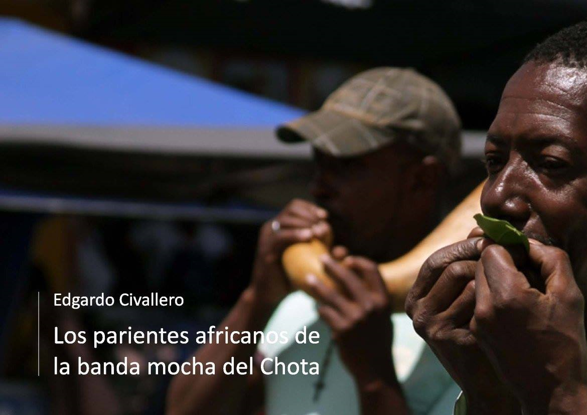

Los parientes africanos de la banda mocha del Chota
Inicio > Libros digitales sobre música. Serie 1 > Los parientes africanos de la banda mocha del Chota
Cómo citar este trabajo: Civallero, Edgardo (2025). Los parientes africanos de la banda mocha del Chota. Edición de archivo. Bogotá: El Zorro de Abajo Editora.
Primera edición, 2016. Edición revisada, 2021 (Wayrachaki Editora). Edición de archivo, 2025 (El Zorro de Abajo Editora).
Descargar en PDF.
Este libro constituye un estudio comparativo sobre los vínculos organológicos, históricos y simbólicos entre la música afroecuatoriana del valle del Chota y las tradiciones de bandas de bocinas de calabaza de África central y oriental.
La investigación parte del análisis de la banda mocha, una orquesta campesina masculina creada a fines del siglo XIX por comunidades afrodescendientes del norte del Ecuador, en las provincias de Imbabura y Carchi. Estas agrupaciones nacieron como respuesta creativa ante la imposibilidad material de acceder a los instrumentos de viento de las bandas militares europeas, sustituyéndolos por equivalentes elaborados con recursos locales: calabazas secas, tallos de agave, cañas y hojas vegetales. Las calabazas pequeñas reproducen melodías agudas semejantes a las de los clarinetes, las medianas cumplen funciones armónicas semejantes a saxos o trombones, y las grandes ejecutan las líneas graves equivalentes a tubas o bombardinos. El conjunto se completa con percusiones —bombos, cajas, güiros, platillos improvisados y quijadas— que aportan el pulso rítmico.
Se demuestra que estos instrumentos no funcionan como trompetas, sino como bocinas o amplificadores de la voz humana, de modo que los intérpretes deforman su propio timbre vocal para emular los sonidos metálicos de una banda. Esta técnica constituye un ejemplo paradigmático de creatividad organológica afroamericana: transformar el cuerpo en fuente sonora principal y el objeto en simple resonador. La etimología del término "mocha" se vincula a la idea de recorte o carencia —por los extremos cortados de las calabazas o por la falta de instrumentos "reales"—, y al mismo tiempo a la pobreza material de sus creadores, convertida en estética sonora.
El texto reconstruye la historia del pueblo afrodescendiente del valle del Chota desde el siglo XVI, desde la esclavitud en las haciendas jesuíticas hasta el sistema del huasipungo, para explicar cómo estas comunidades, a pesar de siglos de marginación, preservaron expresiones culturales propias como la marimba, la bomba y la banda mocha. La investigación muestra que el surgimiento de esta última no fue un fenómeno aislado, sino una continuación de prácticas previas de manipulación de materiales vegetales —hojas, cañas, calabazas— con fines sonoros, presentes tanto en pueblos indígenas vecinos como en tradiciones africanas heredadas.
El núcleo comparativo del libro identifica una sorprendente coincidencia técnica y estética entre la banda mocha y los conjuntos africanos de bocinas de calabaza. Se examinan instrumentos como las amakondere de Uganda, las waza de Etiopía y Sudán, las abu de Kenia y Tanzania, o las akpele y upe de Nigeria, todos ellos aerófonos vegetales de uso ritual o colectivo. En varios casos, estos instrumentos se emplean en orquestas de trompetas naturales que imitan marchas militares europeas, tradición documentada en las danzas beni, mganda y malipenga del África oriental y austral. Dichas danzas, nacidas durante el periodo colonial, reproducían las formaciones y jerarquías de las bandas militares británicas y alemanas, pero reemplazaban los metales por bocinas de calabaza con membranas vibrantes (badza), obteniendo un timbre semejante al de los kazoos o mirlitones.
Esta práctica de "africanizar la banda europea" revela un proceso paralelo al que dio origen a la banda mocha: en ambos casos, comunidades afrodescendientes y africanas respondieron al mismo estímulo colonial (la presencia sonora de la banda europea) con soluciones organológicas análogas, basadas en materiales naturales y en la voz como generadora de sonido. En el África subsahariana, los conjuntos beni, mganda y malipenga se extendieron desde las costas del Índico hasta el Congo y Malawi, transformando los modelos coloniales en expresiones locales; en Ecuador, la misma lógica dio origen a una orquesta rural autóctona que imitaba el sonido de la modernidad sin perder su raíz campesina.
El libro también revisa la trayectoria histórica de los pueblos "congos" —africanos esclavizados provenientes del actual Congo, Angola, Zambia y Malawi—, que fueron trasladados a Ecuador por los jesuitas en el siglo XVIII. Aunque la formación de bandas de calabazas en África es posterior a la abolición de la esclavitud, la coincidencia técnica entre ambos continentes no puede entenderse sin reconocer un trasfondo cultural común: la herencia de los mismos pueblos centroafricanos que llevaron al Nuevo Mundo su concepción del sonido, la imitación y el juego musical como estrategias de resistencia.
En su conclusión, el texto advierte que las bandas mochas actuales enfrentan un proceso de declive. Los músicos envejecen sin relevo generacional, las músicas urbanas y electrónicas han desplazado sus repertorios, y el estigma de "música de viejos" ha marginado su práctica. Sin embargo, la reconexión transatlántica con África —como han hecho tradiciones afrodiaspóricas en Colombia, Cuba o Brasil— podría revitalizar estas orquestas campesinas. El intercambio con agrupaciones africanas de bocinas de calabaza abriría espacios de colaboración, documentación y reaprendizaje, reinsertando la banda mocha en un circuito global de herencias africanas vivas.
La música del valle del Chota no es una simple imitación rural de la modernidad, sino una reinvención acústica de la diáspora africana, donde las calabazas, las voces y el aire sostienen una genealogía de resistencia y creatividad que une, a través del Atlántico, dos mundos sonoros afines.